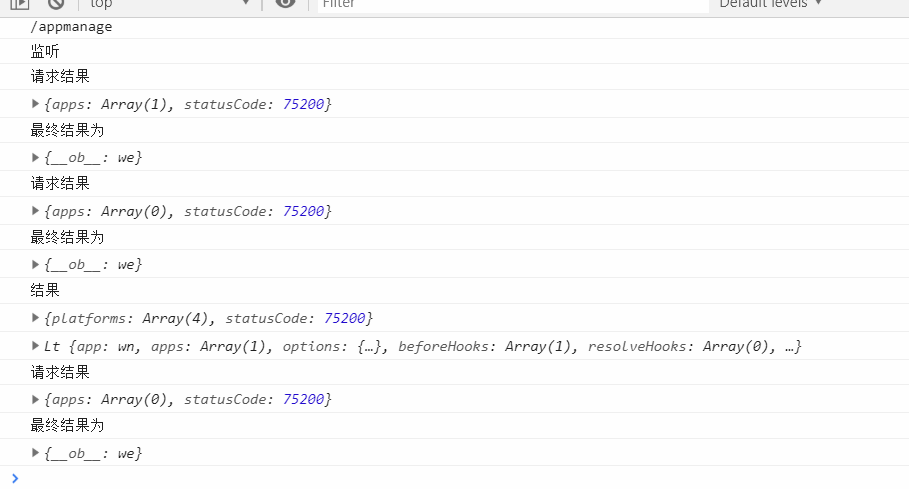
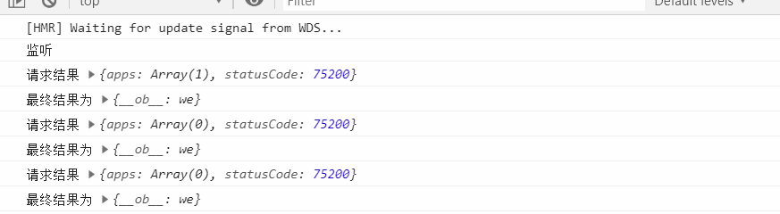

原文出处:本文由博客园博主一步一步向上爬提供。
原文连接:https://www.cnblogs.com/z937741304/p/11495909.html
原文连接:https://www.cnblogs.com/z937741304/p/11495909.html
在前端开发中，大多数的调试一般都是F12中的console和network中查看请求数据和响应数据，也有一部分人喜欢用debugger。
在开发大一些的项目时，在开发环境下，打开着控制台，切换一下页面总是充满着各种console，而且还是很多行，有一部分原因是有下面我写的这样的。

就是因为如果在同一行内同时打印字符串和对象的话，我们会想到如下的拼接 但是对象会调用原型中toString()方法，让我们看起来就难受了。
console.log('上传结果' + {obj: '对象', name:'臧三'});
昨天在开发程序的时候查看了一下企业微信的后台，看到他的console的同一行中同时打印了字符串和对象，就想到原来是可以在同一行打印的。
之前想到的有时候查看的时候调用一下 JSON.stringtify()方法，但是这样当对象复杂的时候，就不利于查看和调试了。
console.log('上传结果' + JSON.stringify({obj: '对象', name:'张三'}));
我感觉写的有点啰嗦了，明明就是再讲一个逗号的事情，你给我扯这么多没用的哈哈。
看一下这样的效果，如果是这样的打印的话我感觉还会清晰很多，而且console的行的数目也会少一些。

具体的做法就是在console的各个参数之间加上一个逗号，
console.log('上传结果' , {obj: '对象', name:'张三'});如果对你有帮助，我会很高兴的。